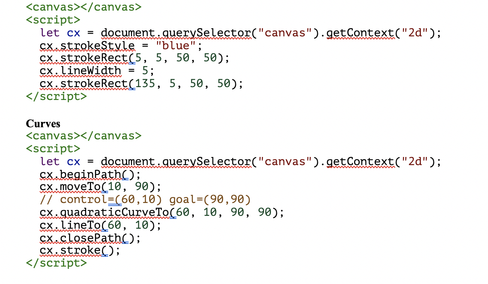

SVG has support now for the native browser, plugin, and mobile browsers as well. Canvas is an HTML element, which is used to draw graphics on the web page. It is referred to as bitmap with an immediate mode graphics application programming interface
Discuss WebGL—we’ll stick to two dimensions. But if you are interested in three-dimensional graphics, I do encourage you to look into WebGL.
The fillRect method fills a rectangle. It takes first the x- and y-coordinates of the rectangle’s top-left corner, then its width, and then its height. A similar method, strokeRect, draws the outline of a rectangle.
The fillStyle property controls the way shapes are filled. It can be set to a string that specifies a color, using the color notation used by CSS.
The strokeStyle property works similarly but determines the color used for a stroked line. The width of that line is determined by the lineWidth property, which may contain any positive number.
Example

Paths
Calling beginPath starts a new path. A number of other methods add lines and curves to the current path.
Exercise
Shapes
Write a program that draws the following shapes on a canvas:
1. A trapezoid (a rectangle that is wider on one side)
2. A red diamond (a rectangle rotated 45 degrees or ¼π radians)
3. A zigzagging line
4. A spiral made up of 100 straight line segments
5. A yellow star
When drawing the last two, you may want to refer to the explanation of Math.cos and Math.sin in Chapter 14, which describes how to get coordinates on a circle using these functions.I recommend creating a function for each shape. Pass the position, and optionally other properties such as the size or the number of points, as parameters. The alternative, which is to hard-code numbers all over your code, tends to make the code needlessly hard to read and modify.
Solution